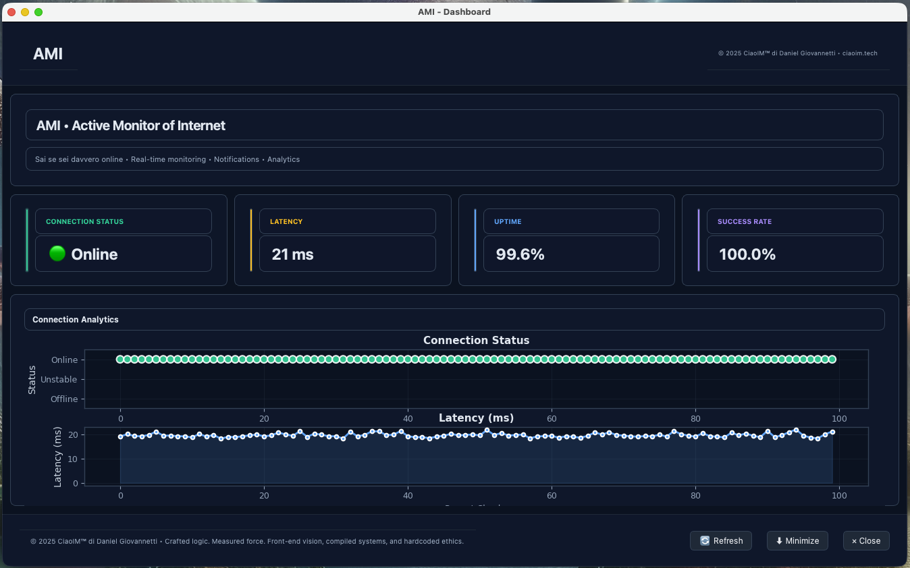

●
Link
Online
Live · stable route
«Sai se sei davvero online.»
Stessa filosofia della dashboard desktop: gradiente slate, card metriche senza bordi pesanti, grafici in tempo reale e stati Online / Unstable / Offline con simboli accessibili (✓ · ! · ✕).
Anteprima UI
Allineamento cromatico alle StatCard della app: Link, Latency, Uptime, Ping OK, Throughput.
Live · stable route
Round-trip estimate
Session availability
Last probe window
Fast tier · speed test
Area grafici — shell arrotondata come nella dashboard (matplotlib · tema scuro / chiaro)
Prodotto
Monitoraggio reale, non solo “ping verde”: HTTP, LAN, speed test, API e OTA.
Ping multi-host, verifica HTTP, distinzione LAN / captive portal. Stati con colore e simboli.
Stessi token della UI desktop: slate, card vetrate, accenti teal / sky / viola.
Misura throughput (Mbps/Gbps), warmup configurabile, mirror di fallback automatici.
/status, /health, /stats con Bearer token se vuoi.
Toast Windows e notifiche macOS; silent mode e filtri per evento.
Aggiornamenti dalle Release; ZIP con windows / macos nel nome per l’installer integrato.
Mercato
Confronto orientato all’uso quotidiano su desktop: capire se hai davvero internet (non solo “cavo collegato”), con costi e complessità onesti. I nomi dei prodotti competitor sono marchi dei rispettivi titolari.
| Aspetto | AMI | PingPlotter | PingInfoView | MultiPing | Zabbix / Nagios |
|---|---|---|---|---|---|
| Focus | Internet reale (LAN vs WAN, captive) | Traceroute / multi-hop | Multi-ping tabellare | Multi-target + alert base | Infrastruttura / agent |
| Verifica HTTP | Sì — oltre all’ICMP | No (ICMP-centric) | No | No | Sì, ma da configurare |
| UI / UX | Dashboard moderna (temi, compatta) | Potente, interfaccia datata | UI anni 2000 | Funzionale, essenziale | Web dashboard tecnica |
| Installazione | ZIP portable, nessun server | Installer pesante, licenza | Exe portable | Installer | Server + DB + setup |
| Notifiche OS | Toast / native | Email, suoni | Nessuna | Base | Molte opzioni |
| Grafici live | Matplotlib in app | Avanzati, più pesanti | No | Semplici | Sì (dopo config) |
| Log / export | CSV con rotazione | Formato proprietario | CSV base | Log | DB / storico enterprise |
| Risorse (idle) | ~1% CPU · ~50 MB RAM | ~4–6% · 200–300 MB | Molto leggero | ~2–3% · ~100 MB | Server: centinaia MB–GB |
| Licenza | Apache 2.0 open source | Commerciale | Freeware chiuso | Commerciale | Open source |
| Ideale se… | Treni, hotspot, Wi‑Fi pubblico, “sono online?” | Diagnosi hop-by-hop ISP | Solo lista ping | SMB / monitoraggio leggero | Data center, NOC grande |
Stack

Dashboard AMI — card, grafici e chrome come nell’app (tema dark / light)
Installazione
Binari in GitHub Releases (ZIP windows / macos).
Da sorgente, nella cartella 3.0:
pip install -r requirements.txt && PYTHONPATH=src python -m ami.main
macOS: scarica lo ZIP il cui nome contiene macos (es. AMI-v3.1.4-macos.zip), apri solo AMI.app dentro AMI-Package.
Se Apple parla di Python, spesso si è aperto per sbaglio il file AMI in Mostra contenuto pacchetto → MacOS — non usarlo.
Leggi MACOS_SECURITY.md e il file LEGGIMI_macOS.txt nello ZIP.